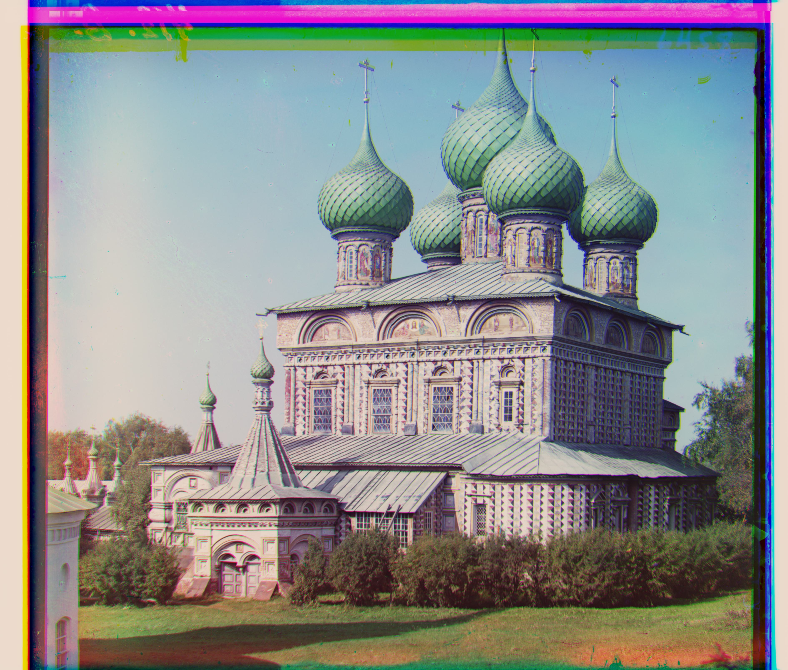

Project 1 - Colorizing the Prokudin-Gorskii Photo Collection
Filip Malm-Bägén

In the early 1900s, Prokudin-Gorskii traveled across the Russian Empire and took photographs of the people, landscapes, and architecture. His pictures were taken in black-and-white, but he used a special camera that took three photographs in quick succession, each with a different color filter (red, green blue). The technology to print color photographs did not exist at the time, so Prokudin-Gorskii's photographs were not seen in color until the 2000s when they were digitized and the color channels were aligned. This project is about colorizing the Prokudin-Gorskii photo using the three black and white images, to produce the intended color photos witnessed by the photographer himself. Additionally, methods of automatically contrasting and adjusting the white balance of the images are implemented.
Method
The task of colorizing the Prokudin-Gorskii photo collection was not a trivial one. The process required careful alignment of the three color channels, all of which used an image pyramid to calculate the best alignment. Thereafter, the images were adjusted for automatic white balance and contrast.
Segmentation
The image was divided into three parts, each representing a color channel. The blue channel was treated as the base image, and the green and red channels were aligned to the blue channel.
Normalized Cross Correlation (NCC)
In order to align the green and red channels to the blue channel, the Normalized Cross-Correlation (NCC) was used as a scoring index for each alignment. A search window of [-15, 15] pixels was used to find the best alignment in the x and y directions. At each new position, the NCC was calculated and compared to the best score. The position with the highest similarity score was considered the best alignment.
Image Pyramid
Given the large size of the images, computing NCC for every possible pixel position directly was impractical. To manage this, an image pyramid approach was used to downsample the images, reducing their size by a factor of 3. The pyramid_scaledown function was used to create the smaller image versions, smoothing and downsampling them. At each pyramid level, alignment was initialized with the coarsest image and progressively refined as the images were scaled to higher resolutions. NCC was calculated on centered images to avoid edge effects, and the best alignment at each level guided the search for finer adjustments. This method efficiently handles large displacements and achieves accurate alignment by leveraging progressively smaller images and refining the results iteratively.
Sobel Filter
For the image "emir.tif", the color channels do not match their brightness values, which made it difficult to align the channels. To solve this, an edge detection algorithm using a Sobel filter was used to enhance the edges of the image. These edge images were sent through the same align function in order to stitch the channels together.
Contrast
The auto-contrast algorithm enhances image contrast by redistributing pixel intensities across the full range. It calculates the frequency of each intensity level, computes a cumulative distribution function (CDF), and normalizes it. This normalized CDF was used to remap the pixel intensities, stretching the contrast and improving the image's overall appearance.
White Balance
The auto-white balance algorithm adjusts the colors of an image to correct color casts. It computes the average color of the image and then scales each color channel to a target gray point. This adjustment helps ensure that the image colors appear more neutral. Finally, the algorithm clips the values to ensure they stay within the valid range, resulting in a balanced image with corrected colors.
Result
Below are the results of the colorized Prokudin-Gorskii photo and the displacements of the red and green channels in relation to the blue.
Original images
Church

R: [-6, 58]
G: [0, 25]
Emir
R: [21, 49]
G: [36, 108]
Harvesters
R: [12, 123]
G: [15, 59]
Icon
R: [21, 90]
G: [15, 41]
Lady

R: [9, 116]
G: [6, 54]
Melons
R: [12, 178]
G: [6, 81]
Onion Church

R: [33, 109]
G: [24, 51]
Sculpture
R: [-30, 140]
G: [-15, 33]
Self Portrait
R: [33, 175]
G: [27, 77]
Three Generations

R: [9, 111]
G: [12, 51]
Train
R: [30, 86]
G: [3, 41]
Challenges
Regarding the NCC, it was discovered early that a peeking window of half the size of the image was sufficient to find the best alignment. If the whole image was used, the process would take too long to complete and the result would be worse due to the unpredictable borders of each color channel disturbing the alignment.
The image "emir.tif" was particularly challenging due to the mismatch of the color channels. The edge detection algorithm using a Sobel filter was used to enhance the edges of the image, which improved the alignment of the channels.
The image pyramid algorithm was also challenging to implement. When running the algorithm without the image pyramid, the process takes around 6.2 minutes to complete and the result is worse than when using the image pyramid. With the image pyramid, the process takes around 8 seconds to complete on the same machine and the result is significantly better. That is about 50x faster. I belive the poor result is because the image is too large and the NCC algorithm is not able to find the best alignment efficiently. The [15, 15] search window gives no real change on the large image. Therefore the downscale of the image is necessary to let the window find its approximate alignment at each layer.
Extras
In addition to the colorization of the Prokudin-Gorskii photo collection, I also adjusted the images for automatic contrast and white balance. Below are the results of a few of these adjustments.
Contrast
Original Images
Edited Images
White Balance
Original Images
Edited Images
Contrast and White Balance
Original Images
Contrast + White Balance Images
Conclusion
As seen in the result above, the colorization of the Prokudin-Gorskii photo collection was a success. The images were aligned and colorized using the three black and white images. The images were also adjusted for automatic contrast and white balance, resulting in improved image quality in some cases.
The contrast increased a lot for the onion church and the melons, while the contrast for the sculpture was not as significant. The automatic white balance improved the images slightly, especially for the sculpture and the melons. The algorithms seem to darken the harvesters' image, which was not the intended result. For the selection of the images, the combination of contrast and white balance appears to worsen every image, except for the sculpture. The onion church especially got its details sharpened and the combination made the image appear overly processed. The rest of the images can be seen here.
If I were to continue working on this project, I would try to improve the contrast and white balance algorithms to better suit the images. The problem probably arose due to the high saturated borders which gave the image an imbalance in colors. Therefore I would start by constructing an algorithm that can automatically cut the borders of the images, as they create an odd effect when the images are stitched at the margins.
The project demonstrates the power of image processing techniques and how an idea from the early 1900s can be brought to life using modern technology.
This webpage design was partly made from generative AI models.